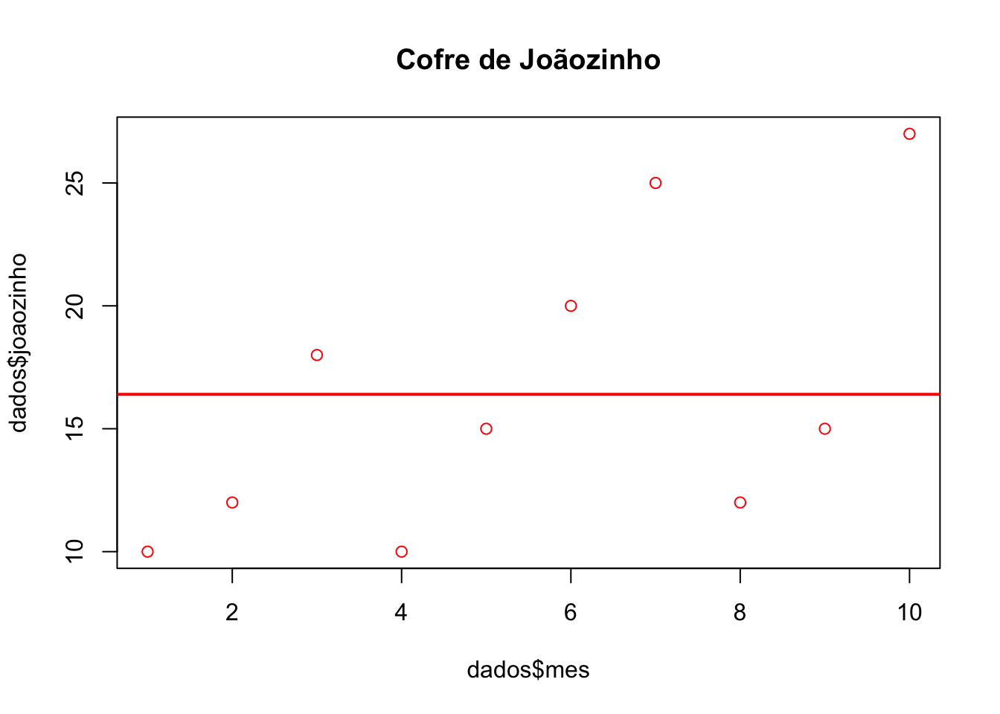
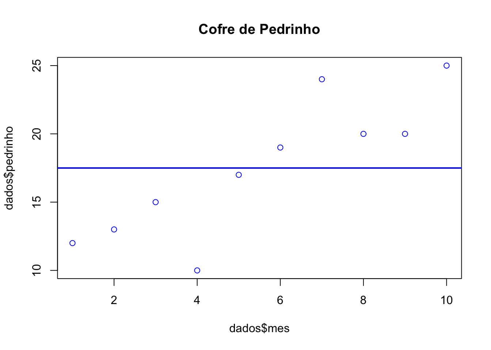
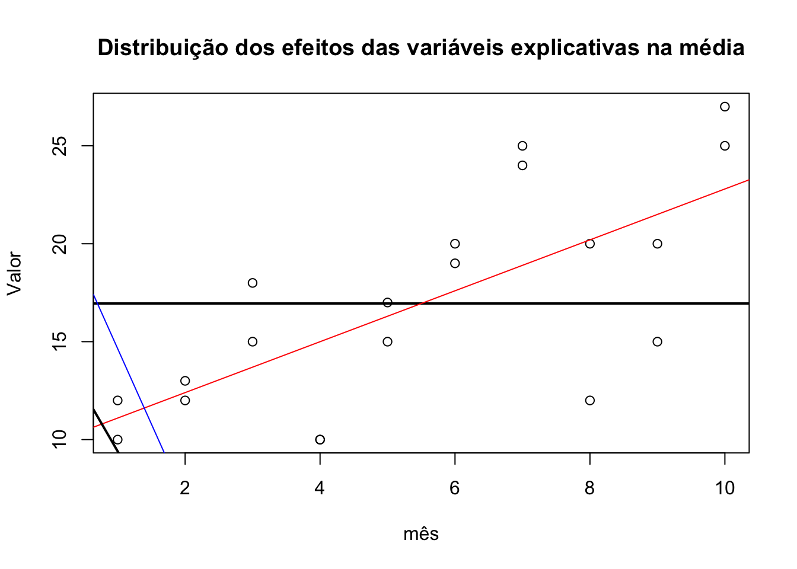

Introdução à regressão
Há vários tipos de regressão, vamos conhecer alguns deles e as premissas para a construção de um modelo.
Neste tutorial, não vamos precisar importar dados; apenas digite os comandos no console do R ou do RStudio.
Progressão e regressão
Na escola, você deve ter estudado em Matemática progressões aritméticas e geométricas. Basicamente, as progressões envolvem uma ordem sequencial em que os números são sempre acrescidos por um valor constante. Na progressão aritmética, descobrimos o valor dessa constante pela subtração do primeiro elemento do segundo elemento deste conjunto. Na progressão geométrica, a constante é o resultado da divisão do segundo pelo primeiro elemento. Daí decorre que a progressão aritmética é linear, e a progressão geométrica é exponencial.
Nas progressões, o valor da constante sempre é adicionado à sequência, aumentando.
Por exemplo, se eu tenho um cofrinho onde coloco todo mês R$10,00, ao final de 10 meses terei 100,00
Um modelo de progressão significa que o valor é constante, ou seja, sempre o mesmo, não muda.
Mas nem sempre temos valores constantes, nem mesmo nos nossos cofrinhos. Vamos acompanhar a evolução do cofrinho de duas crianças, Joãozinho e Pedrinho, por um período de 10 meses. Primeiro, vamos criar um data-frame.
dados <- data.frame(joaozinho = c(10, 12, 18, 10, 15, 20, 25, 12, 15, 27),
pedrinho = c(12, 13, 15, 10, 17, 19, 24, 20, 20, 25),
mes = c(1, 2, 3, 4, 5, 6, 7, 8, 9, 10))
dados
#> joaozinho pedrinho mes
#> 1 10 12 1
#> 2 12 13 2
#> 3 18 15 3
#> 4 10 10 4
#> 5 15 17 5
#> 6 20 19 6
#> 7 25 24 7
#> 8 12 20 8
#> 9 15 20 9
#> 10 27 25 10No primeiro mês, Joãozinho colocou 10,00 reais no seu cofrinho, e Pedrinho 12,00 reais, no segundo mês, 12,00 e 13,00, e assim por diante.
Perguntas que podem ser respondidas:
- Quanto cada um tem?
sum(dados$pedrinho)
#> [1] 175
sum(dados$joaozinho)
#> [1] 164- Qual foi a média de depósito no cofrinho por mês?
mean(dados$pedrinho)
#> [1] 17.5
mean(dados$joaozinho)
#> [1] 16.4Podemos concluir que Pedrinho poupou mais que Joãozinho, em progressão, mas não há um valor constante. Podemos calcular a média de cada um, mas a média não é a constante. Para saber qual é o valor que explica a progressão, precisamos utilizar um modelo chamado de regressão.
Análises de regressão são procedimentos estatísticos que calculam qual é esse valor constante, ou melhor, permite estimar o comportamento médio de uma variável resposta (ou dependente) em relação a uma ou mais variáveis explicativas (ou independentes).
Um primeiro tipo de regressão é a regressão linear simples, em que o comportamento é explicado por uma variável resposta e uma variável explicativa.
No caso de Joãozinho e Pedrinho, temos uma variável explicativa, o tempo, e uma variável resposta, o valor depositado no cofrinho.
Para entender o comportamento médio, precisamos construir uma equação, em que y é o valor médio da variável resposta e x e a variável explicativa.
Em uma progressão aritmética, a equação seria y = x + k, onde k é a constante.
Mas em um modelo de regressão, o valor de y, precisamos prever o ponto onde a reta irá tocar o plano cartesiano e o efeito da variável explicativa, que determinará o ângulo da reta:
y = α + βx
Onde y é a média da variável resposta, x a variável explicativa, α representa o ponto onde a reta cruza o eixo y quando y = 0, e β é o coficiente do efeito da variável explicativa na variável resposta.
Vamos, primeiro, visualizar os dados:
plot(dados$mes, dados$joaozinho, col = "red", main = "Cofre de Joãozinho")
abline(h= mean(dados$joaozinho), col = "red",
lwd = 2)
plot(dados$mes, dados$pedrinho, col = "blue", main = "Cofre de Pedrinho")
abline(h= mean(dados$pedrinho), col = "blue",
lwd = 2)
Na inspeção visual, os pontos correspondem às observações, e a linha corresponde à média. No cofre de Pedrinho, o valor do depósito no cofre (as observações) parece aumentar com o tempo, não conseguimos ver o mesmo no cofre de Joãozinho. Vamos construir o modelo de regressão para estimar o efeito do tempo no valor de depósito no cofre de cada um dos nossos personagens.
A função é lm: especificamos a fórmula e geramos um objeto, vamos chamá-lo de modelo.
modelo.p <- lm(dados$pedrinho ~ dados$mes)
modelo.j <- lm(dados$joaozinho ~ dados$mes)Com o objeto criado, vamos buscar os parâmetros:
modelo.p$coefficients
#> (Intercept) dados$mes
#> 9.666667 1.424242
modelo.j$coefficients
#> (Intercept) dados$mes
#> 9.933333 1.175758Os coeficientes são positivos, o que significa que o aporte aumenta em função do tempo. Arredondando em duas casas decimais, a equação para o cofre de Joãozinho é y = 9.93 + 1.17x e a do cofre de Pedrinho é y = 9.66 + 1.42x. Se observarmos os dados, Pedrinho coemça fazendo aportes maiores no seu cofre, mas o coeficiente de aumento é menor do que o coeficiente de aumento do cofre de Joãozinho. Vamos visualizar as retas:
plot(dados$mes, dados$joaozinho, col = "red", main = "Cofre de Joãozinho")
# Média:
abline(h= mean(dados$joaozinho), col = "red",
lwd = 2)
# Reta da regressão linear:
abline(lm(dados$joaozinho ~ dados$mes), col = "red")
plot(dados$mes, dados$pedrinho, col = "blue", main = "Cofre de Pedrinho")
# Média:
abline(h= mean(dados$pedrinho), col = "blue",
lwd = 2)
# Reta da regressão linear:
abline(lm(dados$pedrinho ~ dados$mes), col = "blue")
Como não estamos tratando de uma progressão, a reta estimada claramente não coincidirá com todos os nossos dados. Observando os gráficos, os pontos que correspondem às observações estão mais próximos à reta no cofre de Pedrinho do que no cofre de Joãozinho; existe mais um parâmetro para ser colocado na equação: o erro e. Para entender o que significa o erro, precisamos entender como o coeficiente e o intercepto foram calculados pelo método dos mínimos quadrados, processo de análise que procura encontrar o melhor ajuste em um conjunto de dados tentando minimizar a soma dos quadrados das diferenças entre o valor estimado e os dados observados (resíduos), que são utilizados para avaliar o ajuste do modelo e o nível de confiança das estimativas feitas a partir dele.
Este é o arranjo das observações do conjunto de dados; para saber o nível de confiança em que este efeito é diferente de um valor α (p-valor), precisamos considerar o efeito do erro.
E para saber o quanto da variação presente nos dados é explicada pela covariável, calculamos o coeficiente de determinação (R2 ajustado), uma medida de qualidade do modelo em relação à sua habilidade de estimar corretamente os valores da variável resposta.
Estes valores são apresentandos na função summary:
summary(modelo.p)
#>
#> Call:
#> lm(formula = dados$pedrinho ~ dados$mes)
#>
#> Residuals:
#> Min 1Q Median 3Q Max
#> -5.3636 -0.7424 0.6364 1.0227 4.3636
#>
#> Coefficients:
#> Estimate Std. Error t value Pr(>|t|)
#> (Intercept) 9.6667 1.8576 5.204 0.000818 ***
#> dados$mes 1.4242 0.2994 4.757 0.001432 **
#> ---
#> Signif. codes: 0 '***' 0.001 '**' 0.01 '*' 0.05 '.' 0.1 ' ' 1
#>
#> Residual standard error: 2.719 on 8 degrees of freedom
#> Multiple R-squared: 0.7388, Adjusted R-squared: 0.7062
#> F-statistic: 22.63 on 1 and 8 DF, p-value: 0.001432O primeiro bloco dos resultados é a fórmula do modelo lm(formula = dados$joaozinho ~ dados$mes).
O segundo bloco apresenta os resíduos (diferença entre os valores estimados e os valores observados), distribuídos em quartis.
O terceiro bloco apresenta os coeficientes calculados: o intercepto e o coeficiente da variável explicativa mes. A primeira coluna apresenta o valor estimado, a segunda coluna apresenta o erro padrão calculado, a terceira coluna apresenta a estatística t calculada e a quarta coluna apresenta o nível de significância (também glosado com os asteriscos ao lado).
O último bloco dos resultados apresenta o erro residual padronizado, o valos de R2 e R2 ajustado.
Observe agora os valores no conjunto de dados do confre de Joãozinho e compare com os de Pedrinho:
summary(modelo.j)
#>
#> Call:
#> lm(formula = dados$joaozinho ~ dados$mes)
#>
#> Residuals:
#> Min 1Q Median 3Q Max
#> -7.3394 -3.7545 -0.5485 4.1576 6.8364
#>
#> Coefficients:
#> Estimate Std. Error t value Pr(>|t|)
#> (Intercept) 9.9333 3.5195 2.822 0.0224 *
#> dados$mes 1.1758 0.5672 2.073 0.0719 .
#> ---
#> Signif. codes: 0 '***' 0.001 '**' 0.01 '*' 0.05 '.' 0.1 ' ' 1
#>
#> Residual standard error: 5.152 on 8 degrees of freedom
#> Multiple R-squared: 0.3494, Adjusted R-squared: 0.2681
#> F-statistic: 4.297 on 1 and 8 DF, p-value: 0.07191No modelo do cofre de Pedrinho, o efeito da variável explicativa mês é positivo e forte, estatisticamente singnificativo com α > 0.05. A variável explicativa, neste modelo, explica 70% da variação dos dados (R2 ajustado).
Já no modelo do cofre de Joãozinho, o efeito da variável explicativa mês não é estatisticamente significativo com α > 0.05.
Observe o erro padrão em cada um dos modelos: o erro padrão no modelo do cofre de Joãozinho (3.51) é muito maior do que no de Pedrinho (1.85).
Para que o modelo de uma regressão linear seja bem ajustado (best fit model), o conjunto de dados precisa atender às seguintes condições:
- Normalidade dos resíduos: os resíduos decorrentes do ajuste da reta segue distribuição normal;
- Homocedasticidade: a variância de Y é constante para todos os valores de X;
- Independência (ou não colinearidade): ausência de dependência entre os dados.
Podemos verificar estas condições por meio da inspeção gráfica do modelo pela função plot:
plot(modelo.p, main = "Cofre de Pedrinho")


No gráfico do primeiro quadrante, observamos na relação entre os resíduos em função dos valores estimados a independência e a homocedasticidade: se os resíduos estão distribuídos aleatoriamente e com mesma amplitude em torno do zero. No gráfico do terceiro quadrante (abaixo), são apresentados os resultados dos resíduos padronizados.
No gráfico do segundo quadrante, a linha diagonal pontilhada representa a distribuição normal teórica, e os pontos a distribuição dos resíduos observada. Espera-se que não exista grande diferença entre os pontos em relação à reta teórica.
O gráfico do quarto quadrante permite visualizar as distâncias de Cook das observações, medida que pode indicar a presença de outliers quando > 1.
plot(modelo.j, main = "Cofre de Joãozinho")


É possível também realizar testes estatísticos sobre os resíduos obtidos, como o teste Shapiro para a normalidade dos resíduos do modelo:
shapiro.test(modelo.p$residuals) #Cofre de Pedrinho
#>
#> Shapiro-Wilk normality test
#>
#> data: modelo.p$residuals
#> W = 0.90323, p-value = 0.2376
shapiro.test(modelo.j$residuals) #Cofre de Joãozinho
#>
#> Shapiro-Wilk normality test
#>
#> data: modelo.j$residuals
#> W = 0.94791, p-value = 0.6439Como podemos ver, os modelos atendem às condições de ajuste. Como conclusão destes modelos, podemos dizer que, para o Cofre de Pedrinho, a variável tempo explica a evolução dos depósitos: com o passar do tempo, aumenta o valor depositado no cofre. Para o cofre de Joãozinho, não.
Mas com a regresssão linear simples testamos o efeito de uma variável, dentre um conjunto de variáveis que poderiam explicar o modelo. Vamos adicionar uma nova variável ao nosso conjunto de dados: festas, sim significa que naquele mês houve festa, não não houve. Será que esta variável influencia no montante de dinheiro depositado em cada cofre?
dados <- data.frame(joaozinho = c(10, 12, 18, 10, 15, 20, 25, 12, 15, 27),
pedrinho = c(12, 13, 15, 10, 17, 19, 24, 20, 20, 25),
mes = c(1, 2, 3, 4, 5, 6, 7, 8, 9, 10),
festa = c(1, 1, 0, 1, 1, 1, 0, 1, 1, 0))A variável explicativa festa foi também assumida como contínua (0 = ausência de festa, 1 = presença de festa). Em uma regressão linear, a variável resposta sempre será contínua. Vamos calcular o modelo considerando o valor depositado (variável resposta) e a ocorrência de festa no mês:
- Cofre de Joãozinho:
summary(lm(dados$joaozinho ~ dados$festa))
#>
#> Call:
#> lm(formula = dados$joaozinho ~ dados$festa)
#>
#> Residuals:
#> Min 1Q Median 3Q Max
#> -5.3333 -2.9286 0.0714 1.6429 6.5714
#>
#> Coefficients:
#> Estimate Std. Error t value Pr(>|t|)
#> (Intercept) 23.333 2.240 10.42 6.25e-06 ***
#> dados$festa -9.905 2.677 -3.70 0.00604 **
#> ---
#> Signif. codes: 0 '***' 0.001 '**' 0.01 '*' 0.05 '.' 0.1 ' ' 1
#>
#> Residual standard error: 3.879 on 8 degrees of freedom
#> Multiple R-squared: 0.6312, Adjusted R-squared: 0.5851
#> F-statistic: 13.69 on 1 and 8 DF, p-value: 0.006041- Cofre de Pedrinho:
summary(lm(dados$pedrinho ~ dados$festa))
#>
#> Call:
#> lm(formula = dados$pedrinho ~ dados$festa)
#>
#> Residuals:
#> Min 1Q Median 3Q Max
#> -6.333 -3.607 1.905 3.536 4.143
#>
#> Coefficients:
#> Estimate Std. Error t value Pr(>|t|)
#> (Intercept) 21.333 2.610 8.173 3.74e-05 ***
#> dados$festa -5.476 3.120 -1.755 0.117
#> ---
#> Signif. codes: 0 '***' 0.001 '**' 0.01 '*' 0.05 '.' 0.1 ' ' 1
#>
#> Residual standard error: 4.521 on 8 degrees of freedom
#> Multiple R-squared: 0.278, Adjusted R-squared: 0.1878
#> F-statistic: 3.081 on 1 and 8 DF, p-value: 0.1173Como podemos observar, a variável festa tem efeito estatisticamente significativo muito forte no modelo do cofre de Joãozinho, explicando 58% da variação. Já no modelo do cofre de Pedrinho, não há efeito estatisticamente significativo desta variável com α > 0.05.
Vamos agora construir um modelo de regressão linear múltipla, com duas variáveis explicativas, festa e mês:
modelo2.p <- lm(pedrinho ~ mes + festa, data = dados)
modelo2.j <- lm(joaozinho ~ mes + festa, data = dados)Usamos o operador + para indicar que as variáveis explicativas são adicionadas ao modelo. Vamos ver os resultados:
summary(modelo2.p) # Cofre de Pedrinho
#>
#> Call:
#> lm(formula = pedrinho ~ mes + festa, data = dados)
#>
#> Residuals:
#> Min 1Q Median 3Q Max
#> -4.5745 -0.8929 0.6429 1.2407 2.2391
#>
#> Coefficients:
#> Estimate Std. Error t value Pr(>|t|)
#> (Intercept) 12.783 2.209 5.787 0.000672 ***
#> mes 1.283 0.264 4.859 0.001838 **
#> festa -3.338 1.655 -2.018 0.083418 .
#> ---
#> Signif. codes: 0 '***' 0.001 '**' 0.01 '*' 0.05 '.' 0.1 ' ' 1
#>
#> Residual standard error: 2.311 on 7 degrees of freedom
#> Multiple R-squared: 0.8349, Adjusted R-squared: 0.7877
#> F-statistic: 17.7 on 2 and 7 DF, p-value: 0.00183
summary(modelo2.j) # Cofre de Joãozinho
#>
#> Call:
#> lm(formula = joaozinho ~ mes + festa, data = dados)
#>
#> Residuals:
#> Min 1Q Median 3Q Max
#> -3.8677 -2.1843 0.3901 1.2994 5.7584
#>
#> Coefficients:
#> Estimate Std. Error t value Pr(>|t|)
#> (Intercept) 17.9130 3.0152 5.941 0.000575 ***
#> mes 0.8130 0.3604 2.256 0.058673 .
#> festa -8.5497 2.2588 -3.785 0.006847 **
#> ---
#> Signif. codes: 0 '***' 0.001 '**' 0.01 '*' 0.05 '.' 0.1 ' ' 1
#>
#> Residual standard error: 3.156 on 7 degrees of freedom
#> Multiple R-squared: 0.7865, Adjusted R-squared: 0.7254
#> F-statistic: 12.89 on 2 and 7 DF, p-value: 0.0045Os resultados são apresentados da mesma forma que na regressão linear simples.
Para o modelo do cofre de Pedrinho, o valor de intercepto, que corresponde ao ponto onde a reta toca o eixo y (variáveis contínuas = 0) é de 12.78. O efeito da variável explicativa mês é positivo e estatisticamente significativ, e o efeito da variável festa é negativo, mas não estatisticamente significativo.
Já para o modelo do cofre de Joãozinho o valor de intercepto é de 17.91, o efeito da variável explicativa mês é positivao mas não estatisticamente significativo. Em relação ao valor de intercepto, a variável festa é negativa e estatisticamente significativa: o que significa que, quando ocorre festa, o valor de depósito no cofre diminui.
O modelo de regressão linear múltipla para o cofre de cada uma das crianças apontou variáveis explicativas diferentes; vamos agora observar como os dados se comportam conjuntamente. Para isso, vamos criar um novo conjunto de dados a partir do inicial, unindo as observações individuais em uma nova variável, dono:
library(reshape2)
geral <- melt(dados, id.vars = c("mes", "festa"), value.name = "valor", variable.name = "dono")
str(geral)
#> 'data.frame': 20 obs. of 4 variables:
#> $ mes : num 1 2 3 4 5 6 7 8 9 10 ...
#> $ festa: num 1 1 0 1 1 1 0 1 1 0 ...
#> $ dono : Factor w/ 2 levels "joaozinho","pedrinho": 1 1 1 1 1 1 1 1 1 1 ...
#> $ valor: num 10 12 18 10 15 20 25 12 15 27 ...Agora, vamos gerar um novo modelo, desta vez considerando os efeitos das variáveis explicativas sem considerar o efeito individual:
summary(lm(valor ~ mes + festa, data = geral))
#>
#> Call:
#> lm(formula = valor ~ mes + festa, data = geral)
#>
#> Residuals:
#> Min 1Q Median 3Q Max
#> -5.7863 -1.4924 0.8332 1.7148 4.3093
#>
#> Coefficients:
#> Estimate Std. Error t value Pr(>|t|)
#> (Intercept) 15.3478 1.9541 7.854 4.69e-07 ***
#> mes 1.0478 0.2336 4.486 0.000325 ***
#> festa -5.9441 1.4639 -4.060 0.000814 ***
#> ---
#> Signif. codes: 0 '***' 0.001 '**' 0.01 '*' 0.05 '.' 0.1 ' ' 1
#>
#> Residual standard error: 2.892 on 17 degrees of freedom
#> Multiple R-squared: 0.7456, Adjusted R-squared: 0.7157
#> F-statistic: 24.91 on 2 and 17 DF, p-value: 8.849e-06Neste modelo, tanto festa como mês são estatisticamente significativos e o percentual de explicação de variância no modelo (R2 ajustado) é de 71%.
Os modelos de regressão calculam o efeito de variáveis explicativas na média.
plot(geral$mes, geral$valor, main = "Distribuição dos efeitos das variáveis explicativas na média", ylab = "Valor", xlab = "mês")
abline(h= mean(geral$valor),lwd = 2)
abline(lm(geral$valor ~ geral$mes), col = "red")
abline(lm(geral$valor ~ geral$festa), col = "blue")
abline(lm(geral$valor ~ geral$festa + geral$mes),lwd = 2)
#> Warning in abline(lm(geral$valor ~ geral$festa + geral$mes), lwd = 2): only
#> using the first two of 3 regression coefficients
A linha horizontal preta corresponde à média de valor nos 10 meses de observação dos cofres dos dois donos. A linha azul corresponde aos coeficientes do modelo de regressão simples do efeito da variável festa no valor; a limha vermelha corresponde aos coeficientes do modelo de regressão simples do efeito da variável mês no valor. A linha inclinada preta corresponde aos coeficientes do modelo de regressão múltipla do efeito das variáveis mês e festa no valor. Observe o movimento em direção à média. Não consideramos, ainda, os efeitos individuais neste modelo (como vimos, em separado, as variáveis explicativas agem de modo diferente em cada um dos modelos dos cofres).
Modelos lineares generalizados
Modelos lineares são uma extensão dos modelos de regressão simples e múltipla que possibilitam usar outras distribuições. A rigor, no modelo anterior, não temos variáveis quantitativas contínuas, e sim discretas, mas que foram assumidas como contínuas por conta da limitação da regressão linear.
Os modelos lineares generalizados foram formulados por Nelder & Wedderburn (1972) como proposta de unificar vários modelos estatísticos, a partir de um algoritmo geral para a estimativa demáxima verossimilhança em todos modelos que investigam a relação entre uma variável de resposta e um ou mais preditores.
As técnicas de modelo linear generalizado normalmente são usadas com variáveis de resposta categóricas. A regressão de mínimos quadrados - regressão linear - geralmente é utilizada com variáveis de resposta contínuas.
Ambas as técnicas estimam parâmetros para o ajuste do modelo: os mínimos quadrados minimizam a soma de erros quadrados para obter estimativas de verossimilhança máxima dos parâmetros, enquanto modelos linear generalizados obtêm estimativas de verossimilhança máxima dos parâmetros usando um algoritmo de mínimos quadrados reponderados iterativamente.
Em termos práticos, modelos lineares generalizados são utilizados em basicamente três tipos de conjuntos de dados:
- contagens, como onúmero de disfluências produzidas por um falante, número de reprovações em disciplinas, etc;
- categóricos, como a realização vs. a não realização de um traço linguístico, preenchimento ou não preechimento de instrumentos, etc.;
- assimétricos positivos, como a temperatura de uma cidade, nível de precipitação, etc.
Nos três casos acima, a distribuição dos dados não é normal. Mas o que é uma distribuição normal? Um conjunto de dados quantitativos, discretos ou contínuos, quando ordenado, apresenta um tipo de distribuição. Vamos a seguir ver alguns dos tipos que podem ser de alvo de interesse (lista não exaustiva). ### Distribuição Bernoulli
Uma distribuição Bernoulli tem apenas dois resultados possíveis: 1 (sucesso) e 0 (fracasso), e uma única tentativa. Uma variável que tenha uma distribuição Bernoulli pode tomar o valor 1 com a probabilidade de sucesso (p), e o valor 0 com a probabilidade de fracasso, (1-p). > E(X) = 1*p + 0*(1-p) = p
A variância de uma variável aleatória de uma distribuição Bernoulli é: > V(X) = E(X²) – [E(X)]² = p – p² = p(1-p)
Distribuição uniforme
Enquanto na distribuição Bernoulli, um resultado é o oposto do outro, na distribuição uniforme, todos os resultados tem a mesma razão de chances, motivo pelo qual é conhecido também por distribuição retangular.
A média e a variância de X após uma distribuição uniforme são: > Média -> E(X) = (a+b)/2 > Variância -> V(X) = (b-a)²/2
Distribuição binomial
Na distribuição binomial, somente dois resultados são possíveis (1 ou 0), mas há possibilidade de repetição do evento, com a mesma probabilidade de sucesso e fracasso em todas as tentativas. Cada experiência (observação) é independente. Uma experiência com apenas dois resultados possíveis repetidos n número de vezes é chamada binomial. Os parâmetros de uma distribuição binomial são n e p, onde n é o número total de tentativas e p é a probabilidade de sucesso em cada tentativa.
Propriedades de uma distribuição binomial:
- Cada observação é independente.
- Há apenas dois resultados possíveis (0 ou 1) em cada observação.
- É realizado um número total de n observações idênticas.
- A probabilidade de sucesso e insucesso é a mesma para todas as observações.
Média ->
µ = n*pVariância ->Var(X) = n*p*q
Sim, se você viu semelhanças com a distribuição Bernoulli, está correto! A distribuição Bernoulli é um caso especial de distribuição binomial com um único julgamento.
Distribuição gaussiana, ou normal
A distribuição normal representa o comportamento da maioria das situações no universo.
Propriedades de uma distribuição normal:
- A média, a mediana e a moda da distribuição coincidem.
- A curva da distribuição é em forma de sino e simétrica em relação à linha
x = μ. - A área total sob a curva é 1.
- Exatamente metade dos valores estão à esquerda do centro e a outra metade à direita (formato de sino, curva de Gauss).
A média e a variância de uma variável aleatória X com distribuição normal é dada por (onde µ (média) e σ (desvio padrão) são parâmetros):
Média ->
E(X) = µVariância ->Var(X) = σ^2
Distribuição Poisson
A distribuição Poisson é aplicável em situações em que os eventos ocorrem em pontos aleatórios de tempo e espaço em que o nosso interesse é apenas o número de ocorrências do evento.
Propriedades de uma distribuição Poisson:
- Qualquer evento bem-sucedido não deve influenciar o resultado de outro evento bem-sucedido.
- A probabilidade de sucesso num intervalo curto deve ser igual à probabilidade de sucesso num intervalo mais longo.
- A probabilidade de sucesso num intervalo aproxima-se de zero à medida que o intervalo se torna menor.
As notações usadas na distribuição de Poisson: - λ é a taxa de ocorrência de um evento, - t é a duração de um intervalo de tempo, - X é o número de eventos nesse intervalo de tempo.
X é a variável aleatória de Poisson e a distribuição de probabilidade de X é chamada de distribuição de Poisson, em que µ é o número médio de eventos num intervalo de comprimento t, tal que µ = λ*t. A média µ é o parâmetro desta distribuição, definida como o λ vezes o comprimento desse intervalo:
Média ->
E(X) = µVariância ->Var(X) = µ
Outras distribuições e inspeção visual
Há vários outros tipos de distribuição, e também há situações que não fica claro qual é o tipo de distribuições, havendo interação entre características ou porque a extensão do conjunto de dados é pequena.
Aqui há um quadro sumário dos diversos tipos de distribuição e sua apresentação gráfica, que auxilia na inspeção visual:
 As linhas representam distribuições de conjuntos de dados com variáveis contínuas e as barras, conjuntos de dados com variáveis discretas. Nem sempre a inspeção visual é suficiente para diferenciar a distribuição. Além da inpeção gráfica com o histograma, o pacote
As linhas representam distribuições de conjuntos de dados com variáveis contínuas e as barras, conjuntos de dados com variáveis discretas. Nem sempre a inspeção visual é suficiente para diferenciar a distribuição. Além da inpeção gráfica com o histograma, o pacote fitdistrplus pode auxiliar neste processo. Vamos retomar o conjunto de dados anterior e verificar as distribuições. Carregue o pacote, e utlizando a função descdist, informe o vetor da variável, se é discrta ou não, e quantas reamostragens serão utilizadas (bootstrap).
library(fitdistrplus)
#> Loading required package: MASS
#> Loading required package: survival
descdist(dados$joaozinho, discrete = FALSE, boot=500)
#> summary statistics
#> ------
#> min: 10 max: 27
#> median: 15
#> mean: 16.4
#> estimated sd: 6.022181
#> estimated skewness: 0.7489164
#> estimated kurtosis: 2.374766
descdist(dados$pedrinho, discrete = FALSE, boot=500)
#> summary statistics
#> ------
#> min: 10 max: 25
#> median: 18
#> mean: 17.5
#> estimated sd: 5.016639
#> estimated skewness: 0.03960331
#> estimated kurtosis: 1.955271O ponto azul corresponde à observação do conjunto de dados. Observe que mas observações dos dados, o cofre de Joãozinho está entre a distribuição normal e uniforme. Já o de Pedrinho está no ponto do uniforme. Junto com a representação gráfica, a função retorna medidas descritivas da amostra, o erro padrão, a estimativa de achatamento (kurtosis) e de inclinação (skewness) da curva.
Saber o tipo da distribuição é essencial para a configuração de um modelo linear generalizado.
Configurando o modelo
Com os modelos lineares generalizados é possível modelar variáveis de interesse que assumem a forma de contagem, contínuas simétricas e assimétricas, binárias e categóricas. A sintaxe de um modelo linear generalizado envolve a definição dos seguintes parâmetros:
- Comportamento (distribuição) da variável resposta.
- Variáveis explicativas.
- Função de ligação entre as variáveis explicativas e variável resposta.
| Tipo de variável resposta | Número de níveis | Características | Exemplo |
|---|---|---|---|
| binária | 2 | dois níveis opostos | aprovado/reprovado no exame |
| ordinal | 3 ou mais | ordem natural dos níveis | Resultados da pesquisa (discordo, neutro, concordo) |
| nominal | 3 ou mais | Nenhuma ordem natural dos níveis | Disciplina escolar (matemática, ciência, arte) |
| Poisson | 3 ou mais | A variável resposta descreve o número de vezes que um evento ocorre em um espaço de observação finito | 0, 1, 2, … |
A partir destes parâmetros, o modelo de regressão linear generalizado pode ser configurado:
Se a sua variável dependente assume uma ampla gama de valores e idealmente está normalmente distribuída, utilize um modelo de regressão linear (
lm).Se a sua variável dependente pode assumir um de dois valores possíveis, como presença ou ausência, com variância, utlilize um modelo de regressao linear generalizado (
glm) com a função de ligaçãobinomial(family = binomial).Se a sua variável dependente for discreta e representar o número de ocorrências de um evento, ou se for uma taxa cuo denominador é fixo, com média e variância iguais, sem ser negativos ou ou conter decimais, utilize um modelo de regressao linear generalizado (
glm) com a função de ligaçãopoisson(family = poisson).Se a sua variável dependente for discreta e ordenada, como na escala Likert, utilize um modelo de regressão ordinal (
polr) do pacoteMASS. O nome da função vem da regressão logística de razões (odds) proporcionais, especificandoHess = TRUEpara que o modelo devolva a matriz de informação observada a partir da otimização que é usada para calcular o erro-padrão.Se a variável variável dependente é categórica, não binária e não ordenada, utilize um modelo de regressão logística multinomial (
multinom) do pacotennet.
Limitações
Uma das limitações dos modelos de regressão generalizados é a exigência de que os erros sejam independentes. Isso significa que eles não são adequados a conjuntos de dados com estruturas longitudinais (medidas repetidas, amostras medidas mais de uma vez ao longo do tempo), espaciais ou multiníveis. Mas é possível contornar essa limitação utilizando modelos lineares generalizados mistos.
Como citar:
FREITAG, Raquel M. K. Introdução à regressão. Disponível em: https://rkofreitag.github.io/regressao.html/. Acesso em: 2020-06-28.